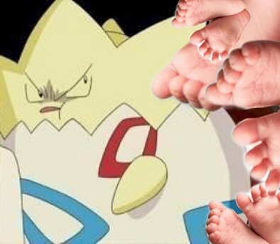
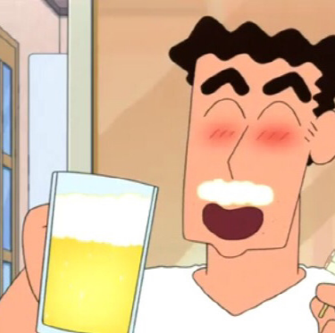

★ 언니, 동생과 함께 떠난 3박 4일간의 홍콩여행 ★

(씬나씬나)
나는 이번 여행을 통해서 확고한 내 여행관을 알게됐고 자매일지라도 많은 부분에서 다를 수 있다는 걸 배웠다.
자유로운 여행 스타일의 나와는 달리 언니는 계획파 여행러였다. 모든 식당과 핫플레이스를 알아보고 예약한 채 우리의 여행은 시작됐다. 그리고 결국 내 걱정은 현실이 됐다...
홍콩 도심에 위치한 산에서 야경을 보러 가려고 예약한 트램을 2시간씩 기다리다 다리가 빠질뻔 한 경험을 했다.. ('▽')
(하지만 사실 야경이 너무 아름다워서 모든 게 용서됐다.)
야경은 아름다웠지만 내려오는 트램을 타는 웨이팅은 아름답지 않았다. 원래 걸어다니는 것 보다 가만히 서 있는게 다리가 진짜진짜 아픈데,
그 습하고 추운 날씨에서 지친 동생이 정말 죽을 것 같은 표정을 짓길래 그나마 멀쩡했던 내가 동정심에 그만, 업어주기로 결심을 해버렸다.

(혼돈의 카오스)
동생을 위해서라면 누나는 뭐든 할 수 있다는걸 깨닫고 스스로 원더우먼이 된 값진 경험을 했다...
내 운동화의 쿠션에게 감사의 인사를 전하며, 여행체질인 내 자신에게도 박수를 보내고싶다.
평소에는 잠도 잘 깨고 화장실도 잘 못가는데, 여행만 가면 이상하게 잠도 잘자고 좋은 꿈도 꾸고 화장실도 잘가게 된다. 심지어 그 심했던 멀미까지도 안한다.
하지만 이런 나도 못이기는 건 바로 냄새냄새 발냄새...

(두고두고 회자 될 그날의 향기)
이런 끔찍한 기억보다는 새롭고 재밌었던 기억이 더 많기 때문에 가끔은 계획적인 여행을 해도 좋을 것 같다. 사실은 가족여행이기도 하고, 동생도 어려서 꼼꼼한 계획을 세운거지만...
무계획 여행은 혼자나 친구와 함께 가는 여행에서 하는걸로 헤헷 ('▽')

★ 팝아트의 거장, 케니 샤프 전시회에 다녀오다 ★

(케니샤프 따라잡기)
"이 날 만큼은 내가 케니샤프!!" 라고 생각하면서 창피함을 무릅쓰고 포즈를 따라해봤다...
저 사진을 찍고 엄청 창피했지만 창피함을 느끼면 프로전시회러가 아니라고 생각되서 바로 당당하게 전시회를 감상했다. ㅋㅋㅋ

(인상깊었던 설치미술작품)
케니샤프의 작품은 덩어리지고 통통튀는 색감이 가장 눈에 띄었는데, 그 중에서도 설치미술 섹션이 가장 인상에 남았다.
저 곳에는 침대도 있고 의자도 있고 티비도 있고 종이컵도 있다. 이 세상 모든 못쓰는 걸로 만든 것 같았는데 그래서 더 멋있고 의미있는 작품이었던 것 같다.

(케니샤프의 태극문양 작품)
케니샤프가 우리나라에 첫 방문한 기념으로 그린 작품이다. 정말 상상치도 못했던 태극문양이라고 생각했다. 설마 저걸 캐릭터로 해석할 줄이야...
문양 뒤로 보이는 물은 한강이라고 한다. 엄청난 관찰력이다!

(역시 하루의 끝엔 시원한 맥주 치얼스-★)
전시회장을 얼마나 열심히 돌아다녔는지, 밖으로 나오니까 해가 져있었다. 그래서 집근처 맥주집에 가서 간단한 안주랑 맥주 한 잔을 걸쳤다.
역시 하루의 마무리는 시원~~~한 생맥주와 함께하는게 최고다! 그것도 내가 가장 사랑하는 사람과 함께한다면 이보다 더 즐거운 일이 있을까 싶다.
순간 짱구아빠에 빙의해서 집에 들어가는 길에도 맥주 한박스를 사갈 뻔 했다... 하지만 내 뱃살을 지키기 위해서 꾹- 참았다.

(방학동안 열정의 You Know Younho로 산 내 자신이 자랑스럽다!)
편입 준비 후에 아주 짧은 방학이었지만 나름대로 알차게 보냈던 것 같다. 수능 끝난 고3처럼 작정을 하고 놀았던 것 같은데, 내가 언제 또 이렇게 생각없이 놀 수 있을까 싶어서 더 그랬던 것 같다.
나이가 들수록 생각없기는 힘드니까 현실은 잠시 뒤로 미뤄뒀던 것 같다. 그래서 후회없이 행복한 시간을 보낼 수 있었던 것 같다.